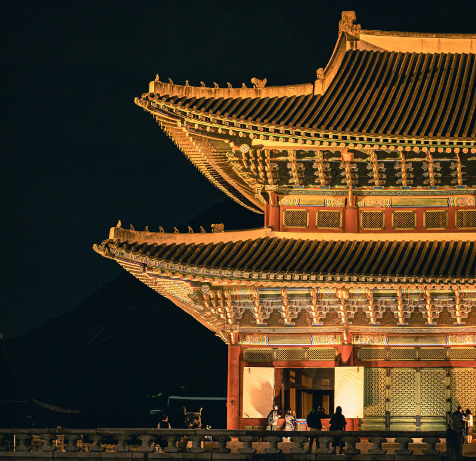

UNESCO
Gyeongbokgung Palace
- 
-
Gyeongbokgung Palace was the first and largest of the royal palaces built during the Joseon Dynasty. Built in 1395, Gyeongbokgung Palace was located at the heart of the newly appointed capital of Seoul (then known as Hanyang) and represented the sovereignty of the Joseon Dynasty. The largest of the Five Grand Palaces (the others being Gyeonghuigung Palace, Deoksugung Palace, Changgyeonggung Palace, Changdeokgung Palace), Gyeongbokgung served as the main palace of the Joseon Dynasty.
The Korean government has invested much time and effort into rebuilding, restoring, and maintaining the palace for future generations. These efforts include work to rebuild and restore the buildings that were destroyed during the Japanese occupation. Visitors to Gyeongbokgung can also visit the National Palace Museum of Korea and the National Folk Museum of Korea as they are located on the palace grounds.
To increase ease of accessibility from Gyeongbokgung Palace to Seochon and vice versa, the palace's western gate, Yeongchumun, was opened to the public on December 2018. For the past 43 years, there were only 3 entrances to Gyeongbokgung Palace - the southern gate Gwanghwamun, the northern gate Sinmumun, and the eastern entrance of National folk Museum of Korea. However, with the opening of the western gate Yeongchumun, entry to the palace from all directions has been now made possible.
-

-
Address 03045 161, Sajik-ro, Jongno-gu, Seoul
FeeAdults - KRW 3,000
Children - KRW 1,500TransportationSubway Line 3, Gyeongbokgung Station, Exit 5 (5 mins on foot)
View Website
Subway Line 5, Gwanghwamun Station, Exit 2 (10 mins on foot)
Changdeokgung Palace
-
Changdeokgung Palace is the second UNESCO World Heritage Site in Seoul. It was selected as a representative palace for its notable beauty in the history of palace architecture in East Asia and for its excellent arrangement with the surrounding naturalenvironment. Changdeokgung Palace was built by King Taejong in 1405.
During the Imjin War, Joseon lost both Gyeongbokgung Palace and Changdeokgung Palace. Reconstructed in the 2nd year of Gwanghaegun (1610), Changdeokgung was used as the royal palace of Joseon for about 270 years.
Changdeokgung Palace has two major tour programs. The first is the general tour, which is a basic tour that covers Injeongjeon (仁政殿), the main hall, and Nakseonjae (樂善齋). The second is a special tour of Howon, which runs from Buyongji, the entrance toHowon, to Okryucheon. The conservation of the ecosystem is absolutely stunning and includes various ponds and gardens.
-

-
Address03072 2-71, Waryong-dong, Jongno-gu, Seoul
FeePlease refer to the website.
TransportationSubway Line 3, Anguk Station, Exit 3 (5 minutes by foot)
View Website
Subway Line 5, Jongno 3-ga Station, Exit 6 (10 minutes by foot)
Changgyeonggung Palace
-
Changgyeonggung Palace was built in 1483 by King Seongjong (the ninth king of the Joseon Dynasty) to take care of the wives of the preceding kings. Compared to other palaces, the size of the palace is compact and simple. Changgyeonggung Palaceis connected with Changdeokgung Palace. It's located east of the primary palace of Gyeongbokgung, so it is also referred to as "Donggwol," the "East Palace."
Myeongjeongjeon is the main hall of the palace, where state affairs were held, such as meetings with officials and the reception of foreign envoys. In particular, Myeongjeongjeon represents an outstanding example of seventeenth century Joseon architectural style and is the oldest main hall of any palace. While visiting Changgyeonggung Palace, it is recommended you visit nearby Changdeokgung Palace as well.
Most of the palace buildings were destroyed by the Japanese during the Japanese invasion of Korea in 1592. The main buildings such as Myeongjeongjeon, Munjeongjeon (council hall), Hwangyeongjeon (Hall), Inyangjeon (Hall), Gongsacheong, and Honghwamun (Gate) were rebuilt by King Gwanghaegun (the fifteenth king of the Joseon Dynasty). During the Japanese occupation, the Japanese built a zoo on the site and renamed the palace "Changgyeongwon," meaning "Changgyeong Garden." Since 1987, the palace has been reconstructed and now resembles its original form.
-
Address03072 185, Changgyeonggung-ro, Jongno-gu, Seoul
FeeAdults (19-64) - KRW 1,000
Youth (7-18) -KRW 500TransportationSubway Line 4, Hyehwa Station, Exit 4 (15 minutes by foot)
View Website
Deoksugung Palace
-
Deoksugung Palace is unique among Korean palaces in having a modern seal engraving and a western style garden and fountain. Medieval and modern style architecture exists together in harmony in Deoksugung Palace. The Changing of the Royal Guard can be seen in front of Daehanmun (Gate) and is a very popular event for many visitors. During the Joseon Dynasty, the royal guard was responsible for opening and closing the palace gate as well as patrolling around the gate area. Outside the palace is a picturesque road flanked by a stone wall which is much loved by visitors.
Originally, Deoksugung Palace was not a palace. The Imjin War (the Japanese invasions in 1592) left all the palaces in Korea severely damaged. When King Seonjo (the fourteenth king of the Joseon Dynasty) returned to Seoul from his evacuation, the primary palace Gyeongbokgung Palace had been burnt to the ground and other palaces were also heavily damaged. A temporary palace was chosen from among the houses of the royal family. This is the origin of Deoksugung Palace.
King Gwanghaegun (the fifteenth king of the Joseon Dynasty) named the palace Gyeongungung, formalizing it as a royal palace. Since then it has been used as an auxiliary palace by many Joseon kings. In 1897, Emperor Gojong (the twenty-sixth king of the Joseon Dynasty) stayed here and expanded it. The modern buildings such as Seokjojeon (Hall) were constructed during this period. In 1907, the palace was renamed Deoksugung.
-

-
Address100-120 99 Sejong-daero, Jung-gu, Seoul
FeeAdults (19-64) - KRW 1,000
Youth (7-18) -KRW 500Transportation Subway Line 1, City Hall Station, Exit 2 (5 minutes by foot)
View Website
Subway Line 2, City Hall Station, Exit 12 (5 minutes by foot)
Gyeonghuigung Palace
-
One of the five grand palaces, Gyeonghuigung Palace was also called "Seogweol" (which means "palace of the west") because it's located west of the main palace, Gyeongbokgung. In its heyday, it was part of a vast complex, with 100 buildings in total, but most of these were destroyed during the Japanese occupation. Following intensive restoration work, it reopened to the public in 2002. On its grounds stand the Seoul Museum of History and the Gyeonghuigung Annex Building of the Seoul Museum of Art.
The palace was originally constructed by order of King Gwanghae, the fifteenth king of the Joseon Dynasty, and was completed in 1623. From the beginning, it was much-loved and served as a secondary palace for some ten kings of the Joseon Dynasty.
A variety of Korean art can also be seen in the Gyeonghuigung Annex building of the Seoul Museum of Art, which is situated on the Gyeonghuigung site. Also, the Seoul Museum of History, one of the foremost tourist attractions in the city, houses a permanent collection allowing visitors to see how Seoul has developed and transformed from prehistoric times to the present day.
-

-
Address 45, Saemunan-ro, Jongno-gu, Seoul
FeeFree admission
Transportation Subway Line 3, Gyeongbokgung Station, Exit 7 (10 minutes by foot)
View Website
Subway Line 5, Gwanghwamun Station, Exit 1 (10 minutes by foot)
Subway Line 5, Seodaemun Station, Exit 4 (10 minutes by foot)